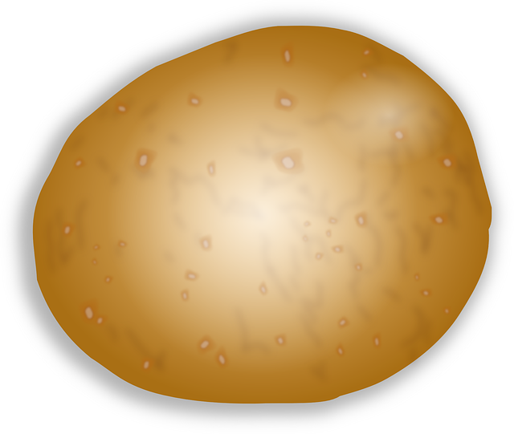

I. The professional way of growing roses is
OCULATION
, i.e.
GRAFTING (Veredelung)
. In early summer, an eye of the noble variety is inserted into the seedling base from which the main shoot grows. The rose is then drawn from this.
II. You can also propagate roses through
CUTTINGS (Stecklinge)
. This is simpler in principle, but it doesn't work for only species.
III. Wild roses can be propagated by
SOWING (Aussaat)
. To do this, pick the ripe rose hips in autumn. Then cut it open and remove the seeds. Place them in a bag of moist compost for a week and then in the refrigerator for six weeks. The seeds can then be placed in the seed tray with sandy soil.
IV. Shrub and ground cover roses can be propagated using
CUTTINGS (Steckhölzer)
. In late autumn, cut off woody shoots that are around 20 cm long with secateurs. Remove all leaves. Stick them there in the garden in sandy soil and keep them moist.
read details (in German)
get back to flower page

click here to watch process in German
click here to watch process in English